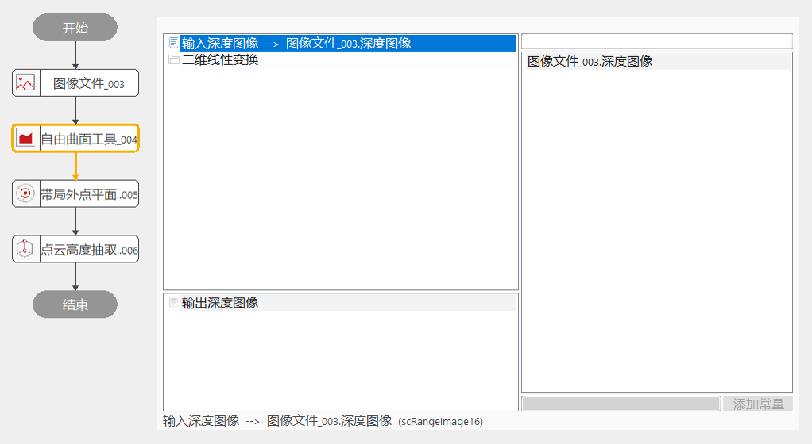
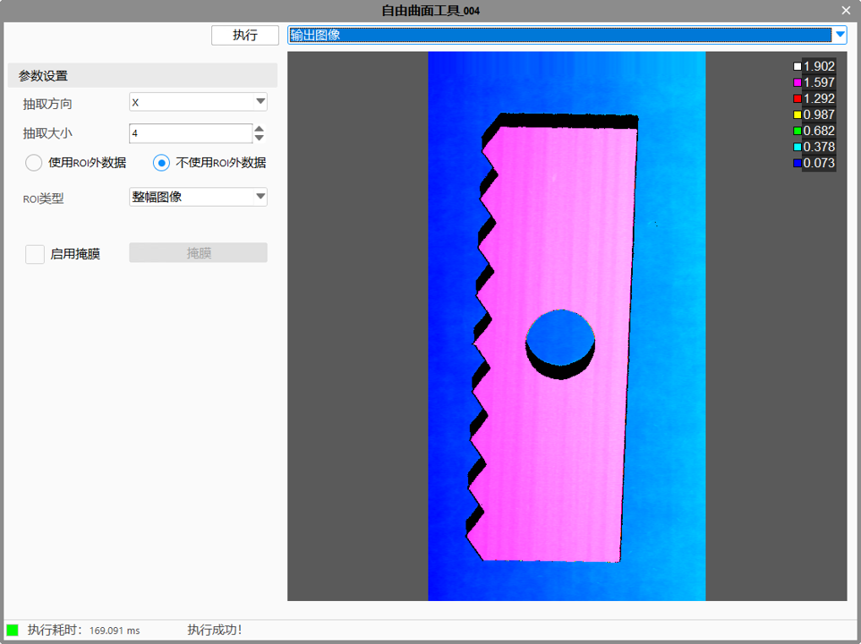
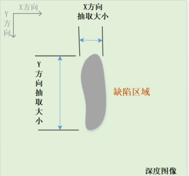

点云自由曲面抽取工具主要是对原深度数据图像中的部分曲面提取，以协助后续点云高度抽取工具和凹凸缺陷检测工具等操作。
主要用于提供给点云高度抽取工具的自由曲面图像，或者凹凸缺陷检测工具的基准图像，进行缺陷判定等。


抽取方向
指定抽取自由曲面的方向，包括X、Y和XY方向。X方向指抽取面是按照对深度图像逐行进行计算获得自由曲面的；Y方向是按照对深度图像逐列进行计算获得自由曲面的；XY方向是指在X、Y方向都有计算深度图像数据获得自由曲面。
抽取大小
指定要抽取高度缺陷的大小，设置值越小，越能贴合起伏较大的曲面，从而抽取更细微的缺陷。

使用ROI外数据
该参数主要是应用在ROI情况下，选择是否参照范围外图像抽取自由曲面。若不参照，则范围外图像数据对范围内抽取的自由曲面的数据不造成影响。
| 现象描述 | 解决方法 |
|---|---|
| 抽取后未发生变化 | 调整抽取大小，越小越贴近曲面 |
| 参数名称 | 参数说明 |
|---|---|
| 抽取方向 | 分为3种：X方向、Y方向和XY方向。 |
| ROI类型 | 待检测区域，分为8种：整幅图像、矩形、仿射矩形、圆形、圆环、椭圆、多边形、多仿射矩形。 |
| 仿射矩形ROI个数 | 仿射矩形个数。 |
| 抽取大小 | 指定要抽取高度缺陷的大小。 |
| 使用ROI外数据 | 选择是否参照范围外图像抽取自由曲面。 |
| 参数名称 | 参数说明 |
|---|---|
| 输出深度图像 | 输出抽取的深度图像。 |
| 执行结果 | 工具执行结果 |
| 执行时间 | 工具执行时间 |
参见“\Samples\3D\深度图\点云高度抽取工具.gvp”。